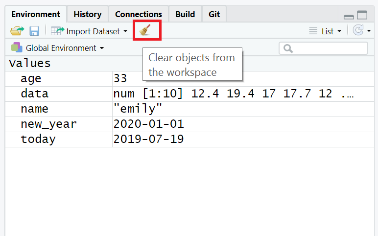

1 Programming basics
In this chapter, we will cover how to use R and RStudio at the University of Glasgow, as well as some basic programming concepts and terminology, common pitfalls, helpful hints, and where to get help. Those of you who have no programming experience should find this chapter particularly helpful, however, even if you've used R before, or have experience in programming, there may be some helpful hints and tips so please make sure you read through this chapter before the moving on.
This is a long chapter but we don't expect you to memorise all the information that is contained in it and some sections of it will not make sense until you start writing your own code - just make sure you know what help is available!
1.1 R and RStudio
In short, R is a programming language that you will write code in and RStudio is an Integrated Development Environment (IDE) which makes working with R easier. Think of it as knowing English and using a plain text editor like NotePad to write a book versus using a word processor like Microsoft Word. You could do it, but it wouldn't look as good and it would be much harder without things like spell-checking and formatting. In a similar way, you can use R without RStudio but we wouldn't recommend it. The key thing to remember is that although you will do all of your work using RStudio for this course, you are actually using two pieces of software which means that you will need both, you need to keep both up-to-date, and you should cite both in any work you do (see the Appendix on citing R and RStudio when needed).
But first we need to look at starting up R and RStudio. There are two ways you can use R for Psychology as a student here at the University of Glasgow. First, you can use a online version of R and R through your web browser and we will refer to this as the R server. Second, you can download and install R and RStudio for free on your laptop or desktop computer.
Which version of R should you use?
The advantage of using the R server is that you do not need to install anything on your machine, you simply access it through your web browser. On our server we have already installed all the software you need for this course. We recommend using the server if you have a computer that you cannot install R on (e.g., a Chromebook), or if you have problems with installing R on your computer.
The advantage to installing R on your computer (what we call a local installation) is that you do not need to be connected to the internet to use it, it is easier to save and manage your files, and there are no problems caused if the server stops working (a rare and short occurrence, but it does happen from time to time).
With the exception of saving files, both approaches are largely identical in how they work, however, our experience tells us that if you can install R on your computer, you should. If your computer cannot install R, or if you have technical problems during the installation you cannot resolve, then you should use the server. So in short we would highly recommend installing R and RStudio on your own machine as soon as you can. However, if you can't install them for some reason, or want to use the R server to get up and running on these first couple of chapters, whilst you install R in your own time, then that is also OK!
1.1.1 Installing R and RStudio on your computer
To use R and RStudio on your computer, please see Installing R which has links to detailed instructions and links to the files you need to download, as well as a links to a series of walkthroughs for installing R on different types of computers. Note that you need to install R, then RStudio, and most likely RTools. These are all free software and do not take a lot of space on your computer. This video by Danielle Navarro (choose the one for your own machine type) is also highly recommended
1.2 Getting to know R Studio
Whether on the server or your own machine, the first thing to do is to get ourselves orientated in RStudio. You will know in RStudio is that it has a number of windows. RStudio has a console window that you can try out code in (appearing as the bottom left window in Figure 1.1), there may be a script editor (top left - not show when you first open RStudio), a window showing functions and objects you have created in the Environment tab (top right window in the figure), and a window that shows plots, files packages, and help documentation (bottom right).

Figure 1.1: RStudio interface
You will learn more about how to use the features included in RStudio throughout this course, however, we would highly recommend at some point watching RStudio Essentials 1 from the RStudio team. The video lasts ~30 minutes and gives a tour of the main parts of RStudio.
1.2.1 Console vs. scripts
When you first open up RStudio you won't see a script like above, there will just be a single pane on the left, which is the console window. You can write code in the console window to test it out, but the key thing to note is that you can't save that code anywhere - if you shut down RStudio you lose your code. For this chapter only, we'll use the console window to show you some simple code examples but moving forward we will tell you to work in script files or what are called R Markdown files. We will look at these in later chapters but you can open a new script file a number of ways, the simplest of which is on the top menu of RStudio, selecting File >> New File >> R Script, and then you'll see the extra pane appear.
1.3 Writing code with functions and arguments
Code in R is made up of functions, and arguments that go into the functions, to create outputs. Functions in R execute specific tasks and normally take a number of arguments. If you're into linguistics you might want to think as these as verbs (function) that require a subject and an object (arguments). Another analogy is that of a toaster - a function would be the toaster and the type of bread and the setting would be the arguments, and the output would be your toast. But a key thing to spot is that functions end in brackets or parentheses, and the arguments go within the parenthesis. They tend to look a bit like this:
function_name(argument1 = value, argument2 = value)That would be the layout of a function with two arguments and each argument takes a value. This will make more sense as you read on.
You will learn to use a lot of functions throughout this book and you can look up all the arguments that a function takes in the help documentation by using the format ?function. As you will see, in functions, some arguments are required, and some are optional. Optional arguments will often use what is known as a default setting, value, or option (normally specified in the help documentation) if you do not enter any value. Again, like always leaving your toaster on the same setting - the toaster does the same task each time without you changing it.
As an example, let’s look at the help documentation for the function rnorm() - a function which randomly generates a set of numbers from what is known as the Normal Distribution.
1.3.1 Activity 1
- Open up RStudio (either on the server or on your machine) and in the console window, type the following code:
?rnormThe help documentation for rnorm() should appear in the bottom right help panel. In the Usage section of the help, we see that rnorm() takes the following form:
rnorm(n, mean = 0, sd = 1)In the Arguments section of the help, there are explanations for each of the arguments:
-
nis the number of observations/numbers/data points we want to create, -
meanis the mean of the observations/numbers/data points we will create. - and
sdis the standard deviation of the observations/numbers/data points.
In the Details section of the help it notes that if no values are entered for mean and sd it will use a default of 0 for the mean and 1 for the standard deviation. So these are the values the function will use for its arguments of mean and sd if you don't state any. However, because there is no default value for n, this means that you must state a value for the arguments n, otherwise the code won't run.
That might sound a little bit confusing so let's try an example. Still using rnorm() let's set the required argument n to ask R to produce 5 random numbers.
1.3.2 Activity 2
- Type the following two lines of code into your console window. Press enter/return at the end of each line to "run" that line. So, type
set.seed(12042016)and press enter/return and then typernorm(n = 5)and press enter/return.
And you will now see these numbers in your console window:
## [1] -0.2896163 -0.6428964 0.5829221 -0.3286728 -0.5110101These numbers have a mean close to 0 (M = -0.238) and an SD close to 1 (SD = 0.48) - they are not exact because you only sampled a very small set and that sampling is random. But now we can play with the function and let's change the additional arguments to produce a different set of numbers. This time we will say we want 5 numbers again (n = 5) but we want our mean closer to 10 (mean = 10) and our standard deviation closer to 2 (sd = 2). We would do that as follows and you see the output numbers below.
## [1] 9.420767 8.714207 11.165844 9.342654 8.977980This time, again we have produced 5 random numbers, but now this set of numbers has a mean close to 10 (M = 9.524) and an sd close to 2 (0.961) as specified. So from this we start to get a sense of arguments within functions and how we can change them, and how we can always remember to use the help documentation to help us understand what arguments a function requires.
set.seed() function
If you're looking up examples of code online, you may often see code that starts with the function set.seed(). This function controls the random number generator - if you're using any functions that generate numbers randomly (such as rnorm()), running set.seed() will ensure that you get the same result (in some cases this may not be what you want to do). We call set.seed() in this example because it means that you will get the same random numbers as this book.
1.3.3 Stating argument names
In the above examples, we have written out the argument names in our code (for example, we wrote n = 5, mean = 10, sd = 2), however, this is not strictly necessary. The following two lines of code would produce very similar outputs with the same number of values and similar means and standard deviations - although each time you run rnorm() it will produce a slightly different set of numbers, because it's random.
The main thing is that both lines of code would still work - the code knows what to do with the numbers. Importantly, however, it is key to realise that the code is following a set order of arguments - n then mean then sd. If you do not write out the argument names the code will use the default order of arguments: for rnorm it will assume that the first number you enter is n, the second number is mean and the third number is sd. So you can write the arguments names or not, but it is important to know the default order if you choose not to write the argument names. If however you write out the argument names then you can write the arguments in whatever order you like - the below will still work and produce six numbers with a mean close to 3 and a standard deviation close to 1.
rnorm(sd = 1, n = 6, mean = 3)When you are first learning R, you may find it useful to write out the argument names as it can help you remember and understand what each part of the function is doing. However, as your skills progress you may find it quicker to omit the argument names and you will also see examples of code online that do not use argument names so it is important to be able to understand which argument each bit of code is referring to (or look up the help documentation to check).
In this course, we will always write out the argument names the first time we use each function, however, in subsequent uses they may be omitted.
1.3.4 Tab auto-complete
When writing code, one very useful feature of RStudio is the tab auto-complete for functions (see Figure 1.2). If you write the name of the function and then press the tab key on your keyboard, RStudio will show you the arguments that function takes along with a brief description. If you press enter on the argument name it will fill in the name for you, just like auto-complete on your phone. You can also use the tab button when writing a function name to auto-complete that function name or to find functions that start with certain letters - if maybe you can't quite remember how to spell a function for example!

Figure 1.2: Tab auto-complete
The auto-complete is incredibly useful when you are first learning R and you should remember to use this feature frequently.
1.4 Base R and packages
When you install R you will have access to a range of functions including options for data wrangling and statistical analysis. The functions that are included in the default installation of R are typically referred to as Base R and there is a useful cheat sheet that shows many Base R functions which can be found about halfway down this page under Contributed Cheatsheets here along with a host of other cheatsheets.
However, the power of R is that it is extendable and open source - put simply, if a function doesn't exist or doesn't work very well, anyone can create a new package that contains data and code to allow you to perform new tasks. You may find it useful to think of Base R as the default apps that come on your phone and other packages as additional apps - the ones that you really want to use to make the phone your own - that you need to download separately.
1.4.1 Activity 3: Install the tidyverse (optional)
In order to use a package, you must first install it. The following code installs the package tidyverse, a package we will use very a lot on this course and we will introduce in later chapters.
PLEASE NOTE: Do not need to do this activity if you are working on the R server or if you are using the computers in a University lab or Boyd Orr Building. This activity should only be performed on your own device.
- If you are working on your own computer, use the below code to install the tidyverse. If you are using the R server or using the Boyd Orr lab machine then skip this activity.
install.packages("tidyverse")If you get an error message that says something like "WARNING: Rtools is required to build R packages" you may need to download and install an extra bit of software called Rtools (this is one of the many reasons why using the server can be easier).
But how do we go about using a packge? Note that you only need to install a package once, however, each time you start R you need to load the packages you want to use. Again this is a bit like how you need to install an app on your phone once, but you need to open it every time you want to use it.
To load packages we use the function library() - this loads packages into your working library. Typically you would start any analysis script by loading all of the packages you need, but we will come back to that in the next chapter.
1.4.2 Activity 4: Load the tidyverse
- Run the below code to load the tidyverse in to your working library.
- Do this activity regardless of whether you are using your own computer or the server.
Often when you load packages you get information in your console window. You don't always get a message but often you will. It does also tend to look like an error message at first - it's not. It's just R telling you what it's done.
Now that we've loaded the tidyverse package we can use any of the functions it contains but remember, you need to run the library() function every time you start R.
1.4.3 Package updates
In addition to updates to R and R Studio, the creators of packages also sometimes update their code. This can be to add functions to a package, or it can be to fix errors. One thing to avoid is unintentionally updating an installed package. When you run install.packages() it will always install the latest version of the package and it will overwrite any older versions you may have installed. Sometimes this isn't a problem, however, sometimes you will find that the update means your code no longer works as the package has changed substantially. It is possible to revert back to an older version of a package but try to avoid this anyway.
To avoid accidentally overwriting a package with a later version, you should never include install.packages() in your analysis scripts in case you, or someone else runs the code by mistake. Remember, the server will already have all of the packages you need for this course so you only need to install packages if you are using your own machine.
1.4.4 Package conflicts
There are thousands of different R packages and each package has lots and lots of functions. Unfortunately, because packages are developed by different people, sometimes different packages have the same name for different functions. For example, the packages dplyr and MASS both have a function named select(). Do not run the below code but if you did you would see a warning telling you that there is a conflict.
##
## Attaching package: 'MASS'## The following object is masked from 'package:dplyr':
##
## selectYou would see a warning that The following object is masked from 'package:dplyr': select. In this case, R is telling you that the function select() in the dplyr package is being hidden (or 'masked') by another function with the same name from the MASS package. If you were to try and use select(), R would use the function from the package that was loaded most recently - in this case it would use the function from MASS. This is an issue because you think you are using one function but really you are using another - and they often work differently and you get odd issues in your code that you don't expect. There are various solutions but one simple one, if you already know of the clash, is to specify which package you want to use for a particular function by writing the code in the format package::function, meaning "use the function from the package", for example:
Clashes are inevitable in your learning and when you see one you will probably not spot it at first but you will learn to resolve them quickly.
1.5 Objects
So we have learnt about functions and arguments and earlier we said functions give us outputs. Another name for outputs, or at least specific types of outputs, are objects. Objects are the output of functions basically - but really you can create objects without functions as well. A large part of your coding will involve creating and manipulating objects. Objects contain stuff. That stuff can be numbers, words, or the result of functions, operations and analyses. But the first key thing to know about object is how to create them and to give them content. You assign content to an object using <- - often called the "left arrow" or the assignment operator or stated as "assigned to". Note that we don't use =. There is a very large discussion on why objects are assigned content and not equal to content but that is for another time. For now, just remember that we assign (<-) content, be it words, numbers, or function output, to objects. Let's try that now.
1.5.1 Activity 5: Create some objects
- Type the following code into the console window and run each line. You should see that
name,age,today,new_year, anddataappear in the environment pane.
name <- "emily"
age <- 16 + 19
today <- Sys.Date()
new_year <- as.Date("2021-01-01")
data <- rnorm(n = 10, mean = 15, sd = 3)
Figure 1.3: Objects in the environment
Note that in these examples, name,age, and new_year would always contain the values emily, 35, and the date of New Year's Day 2021, however, today will draw the date from the operating system on the day you are using the computer, and data will be a randomly generated set of data - as we saw earlier - so the values of these objects will not be static.
- Why don't you try changing the name to your name and the age to your age, and seeing if they update in the environment window.
Importantly, for what we will learn in future chapters, objects can be involved in calculations and can interact with each other. For example:
age + 10## [1] 45
new_year - today## Time difference of -347 days
mean(data)## [1] 16.71506Finally, you can store the result of these operations on objects in a new object as below:
decade <- age + 10
Remember that you may find it helpful to read <- as contains or assigned to, e.g., name contains the text emily or emily is assigned to the object name.
You will constantly be creating objects throughout this course and you will learn more about them and how they behave as we go along, however, for now it is enough to understand that they are a way of saving values, that these values can be numbers, text, or the result of operations, and that they can be used in further operations to create new variables.
You may also see objects referred to as 'variables'. There is a difference between the two in programming terms, however, they are used synchronously very frequently.
1.5.2 Looking after the environment
Now that we are starting to learn about the other windows and in particular the environment window, if you've been writing a lot of code you may find that the environment window (or workspace) has become cluttered with many objects. This can make it difficult to figure out which object you need and therefore you run the risk of using the wrong data frame. If you're working on a new dataset, or if you've tried lots of different code before getting the final version, it is good practice to remember to clear the environment to avoid using the wrong object. You can do this in several way.
- To remove individual objects, you can type
rm(object_name)in the console. Try this now to remove one of the objects you created in the previous section. For example, you would remove the objectageby writingrm(age) - To clear all objects from the environment run
rm(list = ls())in the console. - To clear all objects from the environment you can also click the broom icon in the environment pane.

Figure 1.4: Clearing the workspace
So it is a good idea to keep your environment clean and tidy. Which leads us on to setting up some global options so that you don't get confused.
1.6 Global options
When you open RStudio it will show you what you were last working on, including your code and any objects you have created, assuming this is not the first time you have used RStudio. This might sound helpful, but actually it tends to cause more problems than it's worth because it means that you risk accidentally using an old version of an object - say Date is kept over in the environment from the last time you did some work and you don't realise and you start working on the wrong Date because you wanted a new one etc etc etc. In reality, we recommend changing the settings so that each time you start RStudio, it opens a fresh new environment. You can do this by clicking on the top menu Tools >> Global Options and then deselecting boxes so that your box looks like the below and saving/applying the changes.
Figure 1.5: Global options
That should save a lot of hassle going forward. You will still encounter issues of course and so we are going to end this chapter by having a quick look at getting help.
1.7 Getting Help
1.7.1 Help and additional resources
Getting good at programming really means getting good trying stuff out, searching for help online, and finding examples of code to use as a basis of your own. If you are having difficulty with any of the exercises contained in this book then you can of course ask for help from the team, however, learning to problem solve effectively is a key skill that you will develop throughout this course. There are a wealth of additional resources in the Appendix of this book so it might be worth checking them out, but here are four approaches we take to resolving an issue when we hit a problem.
- Use the help documentation. If you're struggling to understand how a function works, remember the
?functioncommand. - Think when did you last run this function or code successfully? Look back on what you did then and see what is the difference. The skills build on each other so you should always look back to go forward!
- If you get an error message, copy and paste it in to Google - it's very likely someone else has had the same problem.
- Trying googling your question in the style of the package name or function name and what you want to do. For example, arrange data tidyverse or maybe sort data in r
And if those approaches don't work, then, in addition to these course materials and the other PsyTeachR books, there are a number of excellent online resources for learning data skills that can serve as quick guides:
- individual package quickguides found via the top menu:
Help >> Cheat Sheets - R Cookbook
- StackOverflow
- R for Data Science
- Search or use the #rstats hashtag on Twitter
You will find that the #rstats community as it is referred to is very helpful and create a lot of excellent materials.
1.7.2 Debugging tips
Another top skill for resolving issues is what is known as debugging - fixing your coding mistakes. In fact a large part of coding is trying to figure why your code doesn't work and this is true whether you are a novice or an expert. As you progress through this course you should keep a record of mistakes you make and how you fixed them. In the early chapters we will provide a number of common mistakes to look out for but you will undoubtedly make (and fix!) new mistakes yourself. Thing to keep in mind when coding are:
- Have you loaded the correct packages for the functions you are trying to use? One very common mistake is to write the code to load the package, e.g.,
library(tidyverse)but then forget to run it. - Have you made a typo? Coding has to be specific on spelling and
datais not the same asDATA, andt.testis not the same ast_test. - Is there a package conflict? Have you tried specifying the package and function with
package::function? - Is it definitely an error? Not all red text in R means an error - sometimes it is just giving you a message with information.
1.7.3 Reset your R sessions
Finally, if you find that your code isn't working and you can't figure out why, it might be worth starting a new session. This will clear the environment and detach all loaded packages - think of it like restarting your phone.When you open up R and start writing code, loading packages, and creating objects, you're typically doing so in a new session. In addition to clearing the workspace, it can sometimes be useful to start a new session. This will happen automatically each time you start R on your computer, although sessions can persist on the server.
1.7.4 Activity 6
- This last activity shows a quick way to restart R from inside RStudio. On the Top Menu, click
Session >> Restart R.
Figure 1.6: The truth about programming
All that said, don't worry about making mistakes. Accept that you will make them and learn from them. And remember we are here to help.
1.8 Test yourself
Finally, throughout the book you will find additional questions like these to help you check your understanding. Some will have blanks to fill in, some will be Multiple Choice, but the answers will be revealed in the chapter. If you are unsure of the answer and can't find the explanation, just ask!
Question 1. Why should you never include the codeinstall.packages() in your analysis scripts?
Remember, when you run install.packages() it will always install the latest version of the package and it will overwrite any older versions of the package you may have installed.
Question 2.What will the following code produce?
rnorm(6, 50, 10)The default form for rnorm() is rnorm(n, mean, sd). If you need help remembering what each argument of a function does, look up the help documentation by running ?rnorm
Question 3. If you have two packages that have functions with the same name and you want to specify exactly which package to use, what code would you use?
You should use the form package::function, for example dplyr::select. Remember that when you first load your packages R will warn you if any functions have the same name - remember to look out for this!
read_csv() looks like a function as it has the brackets at the end of it and the <- is the assignment symbol so it is most likely that 35 might be the input to an argument as it is just a value.
Remember that functions tend to have brackets or parentheses at the end of their name and the arguments and values go inside the parentheses.
<- is to send the output from the function to a/an
This is the assignment operator and we use it, <-, to assign content such as the output of functions to an object.
rnorm(n = 10, meen = 5, sd = 1)?
The answer is c - One of the arguments is spelt incorrectly. If you look closely you will see that the argument mean has been spelt with two e's instead of one e, meen. This will create an error and the code will crash. This is a typical debugging issue in coding and just shows you need to be careful with spelling.
1.9 Words from this Chapter
Below you will find a list of words that were used in this chapter that might be new to you in case it helps to have somewhere to refer back to what they mean. The links in this table take you to the entry for the words in the PsyTeachR Glossary. Note that the Glossary is written by numerous members of the team and as such may use slightly different terminology from that shown in the chapter.
| term | definition |
|---|---|
| argument | A variable that provides input to a function. |
| assignment operator | The symbol <-, which functions like = and assigns the value on the right to the object on the left |
| base r | The set of R functions that come with a basic installation of R, before you add external packages |
| console | The pane in RStudio where you can type in commands and view output messages. |
| default value | A value that a function uses for an argument if it is skipped. |
| environment | A data structure that contains R objects such as variables and functions |
| function | A named section of code that can be reused. |
| mean | A descriptive statistic that measures the average value of a set of numbers. |
| normal distribution | A symmetric distribution of data where values near the centre are most probable. |
| object | A word that identifies and stores the value of some data for later use. |
| package | A group of R functions. |
| r markdown | The R-specific version of markdown: a way to specify formatting, such as headers, paragraphs, lists, bolding, and links, as well as code blocks and inline code. |
| rstudio | An integrated development environment (IDE) that helps you process R code. |
| script | A plain-text file that contains commands in a coding language, such as R. |
| standard deviation | A descriptive statistic that measures how spread out data are relative to the mean. |
| tidyverse | A set of R packages that help you create and work with tidy data |
End of Chapter
That is end of this chapter. Be sure to look again at anything you were unsure about and make some notes to help develop your own knowledge and skills. It would be good to write yourself some questions about what you are unsure of and see if you can answer them later or speak to someone about them. Good work today!